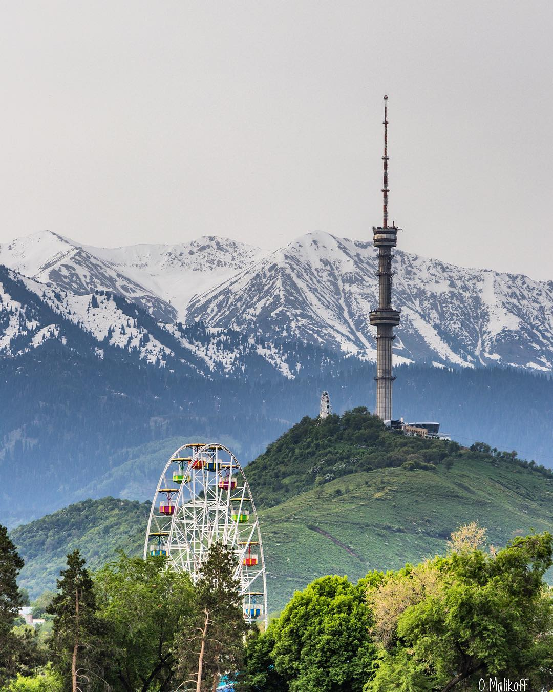
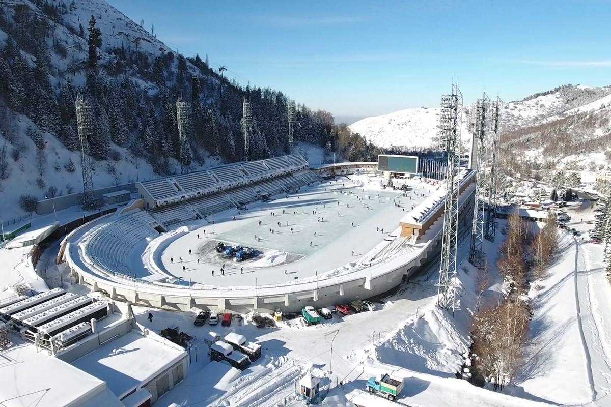

Кок Тобе — место отдыха для всей семьи! Царство кристально чистого воздуха, гостеприимства и неиссякаемого восторга. Парк «Кок Тобе» - один из символов города Алматы и всего Казахстана, расположенный на пике горы Кок Тобе на высоте 1 100 метров над уровнем моря, в 5 минутах езды от центра города.

Медеу — высокогорный спортивный комплекс, расположенный в высокогорном урочище Медеу на высоте 1691 метр над уровнем моря, вблизи «южной столицы» Казахстана — Алма-Аты, чуть ниже горного курорта «Шымбулак».

Шымбулак — популярный горнолыжный курорт в Казахстане, близ Алма-Аты, расположенный на хребте Заилийский Алатау немного выше высокогорного катка «Медеу».

Главный гид по городу Алматы: Елмар Зарина